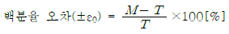
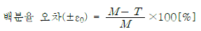
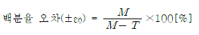
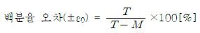
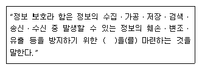
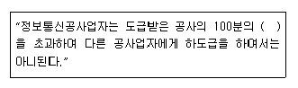

통신설비기능장 (2011-07-31 기출문제)
1과목: 임의 과목 구분(20문항)
1. 다음 중 LAN의 매체 접근 제어(MAC: Media Access Control)에 속하지 않는 것은?
- CSMA/CD
- 토큰 링
- 토큰 버스
- CDMA
(정답률: 77%)

2. 다음 변조방식 중 가장 전송속도가 빠른 것은?
- QAM
- ASK
- BPSK
- FSK
(정답률: 88%)
3. 어느 대역에서 거의 같은 크기로 분포되어 있는 전력밀도 스펙트럼을 가진 잡음은?
- 필터 잡음
- 주기성 잡음
- 백색 잡음
- 충격성 잡음
(정답률: 89%)
4. 다음 중 급전선과 안테나 사이에 임피던스 정합을 하는 이유로 가장 적합한 것은?
- 정재파비를 크게 하기 위해서
- 최대 전력을 전달하기 위해서
- 신호의 왜곡을 방지하기 위해서
- 전압과 전류의 위상차를 크게 하기 위하여
(정답률: 67%)
5. 사용주파수 2[MHz]인 λ/4 수직접지 안테나의 실효높이는 약 몇 [m]인가?
- 15
- 23.9
- 47.8
- 95.5
(정답률: 58%)
6. PCM에서 ISI를 측정하기 위해 eye pattern을 이용하는데 눈을 뜬 상하의 높이가 의미하는 것은?
- ISI의 정도
- 시스템의 감도
- 잡음의 여유도
- ISI 간섭없이 수신파를 샘플링할 수 있는 주기
(정답률: 86%)
7. 다음 중 비동조 급전의 특징에 속하지 않는 것은?
- 정합장치가 필요없다.
- 급전선 상에 진행파만 존재하도록 한다.
- 송신기와 안테나가 멀 때 사용 가능하다.
- 평형형, 불평형형 급전선 모두 사용할 수 있다.
(정답률: 54%)
8. 가입자의 발신, 통화 중 필요한 중계선 확인 등의 감시 기능을 하는 전자교환기의 장치는?
- 통화 스위치 회로망
- 주사 장치
- 중앙 제어 장치
- 일시 기억 장치
(정답률: 88%)
9. 다음 중 변조를 하는 이유가 아닌 것은?
- 장거리 전송을 효과적으로 하기 위하여
- 양자화 잡음을 줄이기 위하여
- 송수신 안테나의 크기 문제를 해결하기 위하여
- 주파수 분할 다중통신을 하기 위하여
(정답률: 72%)
10. 다음 중 의사잡음(PN 부호)에 대한 설명으로 적합하지 않은 것은?
- 백색잡음과 유사한 스펙트럼을 갖는다.
- 주파수 대역폭을 확산시킨다.
- 일정한 주기를 갖는 부호로서 주로 FDMA에 이용된다.
- 재밍(jamming)을 최소화 할 수 있다.
(정답률: 79%)
11. UHF 주파수 대역의 파장 범위는?
- 10 ~ 100[m]
- 1 ~ 10[m]
- 0.1 ~ 1[m]
- 1 ~ 10[cm]
(정답률: 82%)
12. Time-Sharing 방법에 대한 설명으로 거리가 먼 것은?
- 컴퓨터의 이중화가 필요하다.
- 컴퓨터를 다수의 이용자가 사용한다.
- 자원을 공유할 수 있다.
- 파일 등의 사용에 제한이 있을 수 있다.
(정답률: 72%)
13. 토큰 패싱(Token-Passing) 방식의 프로토콜에 관한 설명 중 옳지 않은 것은?
- CSMA/CD 방식에 비하여 복잡하다.
- 가변길이의 메시지 송신이 가능하다.
- CSMA/CD 방식에 비하여 높은 부하에 대해서도 안정되게 동작한다.
- 송신 전에 전송로의 사용 여부를 확인한 후 전송로가 비어 있을 때만 송신한다.
(정답률: 57%)
14. 다음의 통신선로 중에서 케이블 외부의 전자파로 인한 간섭을 가장 많이 받는 것은?
- 광 케이블
- STP 케이블
- UTP 케이블
- 동축 케이블
(정답률: 72%)
15. 다음 중 광통신의 특성이 아닌 것은?
- 광대역성이다.
- 저손실성이다.
- 전자기적 유도성이다.
- 코어가 세경 및 경량이다.
(정답률: 87%)
16. 다음 중 무선수신기에서 고주파 저잡음 증폭기를 사용하는 목적으로 적합하지 않은 것은?
- 감도 현상
- 신호대 잡음비(S/N) 개선
- 근접한 간섭신호 제거
- 영상 주파수 선택도 개선
(정답률: 38%)
17. 육상 마이크로파 통신용 안테나로 가장 많이 사용되는 것은?
- 파라볼라 안테나
- 롬빅 안테나
- 웨이브 안테나
- 헤리컬 안테나
(정답률: 75%)
18. 어떤 측정계기의 지시값을 M, 참값을 T라 할 때 백분율 오차(ε0)의 관계식은?




(정답률: 71%)
19. 휘트스톤 브리지(wheatstone bridge)의 원리를 이용하여 루프(loop)저항의 측정, 혼선저항의 위치 측정 및 단선 고장의 위치 측정 등을 할 수 있는 측정기는?
- L3 시험기
- BW(Break Down) 시험기
- Pulse 시험기
- 감쇠량 시험기
(정답률: 78%)
20. 다음 중 양자화를 하지 않는 변조 방식은?
- DM
- PCM
- PPM
- DPCM
(정답률: 43%)
2과목: 임의 과목 구분(20문항)
21. 이동통신에서 주위에 있는 건물 또는 장애물 등에 의한 난반사에 의해 생기는 페이딩에 대한 설명으로 적합한 것은?
- 통상 레일리(Rayleigh) 분포특성을 갖는다.
- 로그 노말(Log normal) 페이딩이라고도 한다.
- 건물 등 반사파 등에 의해 수신되는 전파의 세기가 매우 느리게 변화한다.
- 주로 이동국과 기지국간의 가시(Non line of sight) 조건에서 발생된다.
(정답률: 58%)
22. 다음 중 해킹의 예방에 대한 설명으로 적합하지 않은 것은?
- 해킹 방지를 위한 정보 보호 관리 체계가 구축되어야 한다.
- 해킹 사고 발생시 적극 대처하기 위한 조
- 해킹 범죄에 대해서는 사회가 관대하게 대하여야 한다.
- 국제적 해킹 사고에 대비하여 외국과의 긴밀한 협력 체제를 구축하여야 한다.
(정답률: 82%)
23. 다음 중 광케이블의 분류에서 용도별 분류에 적합하지 않은 것은?
- 관로용
- 특수용
- 해저용
- 직매용
(정답률: 87%)
24. 다음 중 디지털 통신에서 비동기 검파의 포락선 검파방식이 가능한 변조방식은?
- ASK와 FSK
- FSK와 PSK
- ASK와 PSK
- PSK와 QAM
(정답률: 71%)
25. 다음 중 평형변조기에서 양측파대 출력 중 단측파대 출력만을 얻기 위해서 일반적으로 사용하는 것은?
- RC 필터
- 수정필터
- 주파수변별기
- 웨이브가이드 필터
(정답률: 65%)
26. 다음 중 반도체에서 빛의 유도방출을 이용한 발광소자는?
- LED
- LD
- APD
- PIN
(정답률: 74%)
27. 다음 ( ) 안에 들어갈 내용으로 가장 적합한 것은?

- 관리적ㆍ기술적 수단
- 일련의 활동과 수단
- 수동적ㆍ능동적 수단
- 정보화에 필요한 수단
(정답률: 80%)
28. 저궤도 통신위성(LED)에 대한 설명으로 틀린 것은?
- 지구관측, 기상관측, 지구자원탐사 등에 이용된다.
- 24시간의 공전주기를 가진 정지위성을 이용한 통신 서비스를 제공한다.
- Iridium, Global star project 등이 있다.
- 음성 및 비음성 서비스를 제공할 수 있다.
(정답률: 73%)
29. 다중모드 광섬유에서 가장 문제가 되는 분산은?
- 색분산
- 재료분산
- 모드분산
- 구조분산
(정답률: 73%)
30. 시시각각으로 변화하는 전기적인 파형을 스크린 상에 묘사시켜 파형을 측정ㆍ분석하는 기기는?
- 디지털 멀티미터
- 오실로스코프
- L3 시험기
- Pulse 시험기
(정답률: 85%)
31. 다음 중 전자 교환기의 소프트웨어 구성 비율이 가장 높은 부분은?
- 운용 프로그램
- 유지보수 프로그램
- 시스템 프로그램
- 호처리 프로그램
(정답률: 67%)
32. 위상정수가 0.314[rad/km]인 케이블에 전송되는 통화전류의 파장은 몇 [km]인가?
- 1.57
- 3.14
- 10
- 20
(정답률: 28%)
33. 최번시 1시간 동안에 회선당 20개의 호가 발생되고 호의 평균 보류시간이 10분일 때, 교환기에 3만 회선 가입자가 수용되어 있다면 교환기에서 발생하는 총 트래픽량은?
- 100[어랑]
- 30000[어랑]
- 100000[어랑]
- 120000[어랑]
(정답률: 76%)
34. 다음 중 후방 산란법에 의한 광을 검출하는 장비로서 가장 널리 이용되는 것은?
- 오실로스코프
- 레벨메터
- OTDR
- 회로시험기
(정답률: 80%)
35. 단말장치로부터의 디지털 데이터를 디지털 전송로에 맞는 신호로 변환하여 전송하고 수신 측에서는 원래의 단말장치에서 사용하는 디지털 데이터 형태로 바꾸어주는 장비는?
- PCM
- DSU
- CODEC
- MODEM
(정답률: 85%)
36. OSI 7계층에서 기계적, 전기적, 절차적 특성을 규정한 계층은?
- 물리 계층
- 데이터링크 계층
- 네트워크 계층
- 트랜스포트 계층
(정답률: 76%)
37. 다음 중 위성지구국에 사용되는 카세그레인 안테나에 대한 설명으로 적합하지 않은 것은?
- 초점거리가 길고 복사기에서 고 이득이 얻어진다.
- 부엽이 매우 작다.
- 대지에서 잡음을 적게 받기 때문에 저잡음 특성을 나타낸다.
- 1차 복사기와 송수신기가 직결되기 때문에 급전계 전송손실이 작다.
(정답률: 44%)
38. 전원회로에서 무부하시 단자전압이 52[V]이고, 정격부하시의 단자전압이 50[V]라면 전압변동률 몇 [%]인가?
- 2[%]
- 4[%]
- 6[%]
- 8[%]
(정답률: 80%)
39. 전기통신설비에 대한 물건의 접촉 기타의 방법으로 전기통신설비의 기능에 장해를 주어 전기통신의 소통을 방해한 자에 대한 벌칙은?
- 2년 이하의 징역 또는 5천만원 이하의 벌금
- 2년 이하의 징역 또는 1억원 이하의 벌금
- 5년 이하의 징역 또는 1억원 이하의 벌금
- 5년 이하의 징역 또는 2억원 이하의 벌금
(정답률: 73%)
40. CATV 시스템의 가장 핵심적인 부분을 차지하는 것은?
- 헤드엔드
- 교환장치
- 단말장치
- 전송로
(정답률: 74%)
3과목: 임의 과목 구분(20문항)
41. 베이스 밴드(Baseband) 전송방식이 아닌 것은?
- RZ 전송방식
- NRZ 전송방식
- 캐리어 전송방식
- 바이폴라 전송방식
(정답률: 66%)
42. 다음 중 절연저항 측정에 주로 사용되는 것은?
- 맥스웰 브리지
- 켐벨 브리지
- 메거
- 빈 브리지
(정답률: 75%)
43. 전자교환기의 통화로계의 구성장치가 아닌 것은?
- 통화로장치
- 통화로 제어장치
- 시스템 제어장치
- 주사장치
(정답률: 67%)
44. 포스터 실리형과 비교하여 비검파기에 대한 설명으로 틀린 것은?
- 다이오드의 결선 방향이 다르다.
- 출력측에 큰 용량의 콘덴서가 접속되어 있다.
- 검파 출력전압은 2배이고 출력전압의 극성은 동일하다.
- 중성점이 접지되어 있다.
(정답률: 54%)
45. 다음 ( ) 안에 들어갈 내용으로 적합한 것은?

- 10
- 30
- 50
- 70
(정답률: 76%)
46. 다음 중 에러를 검출하여 정정까지 할 수 있는 코드는?
- ASCII 코드
- Parity 코드
- BCD 코드
- Hamming 코드
(정답률: 83%)
47. 다음 중 대표적인 통신망의 형태가 아닌 것은?
- 성형
- 망형
- 사각형
- 버스형
(정답률: 78%)
48. 이동통신에서 이동국이 다른 이동통신 교환기 서비스 영역 또는 다른 사업자 영역으로 이동하여도 통화가 가능하도록 하는 기능은?
- 위치등록
- 로밍
- 핸드오버
- 호출
(정답률: 93%)
49. 다음 중 영상주파수 선택도에 대한 설명으로 적합하지 않은 것은?
- FM 수신기에만 존재하는 고유의 혼신 방해이다.
- 중간주파수를 높게 취함으로써 영상주파수에 의한 혼신을 감소시킨다.
- 영상신호에 의해서 발생하는 혼신 방해를 억압하는 능력을 말한다.
- 고주파 증폭단 동조회로의 Q를 크게 함으로써 영상주파수에 의한 혼신을 감소시킨다.
(정답률: 49%)
50. 다음 중 안테나의 손실저항의 종류에 속하지 않는 것은?
- 접지저항
- 도체저항
- 복사저항
- 유전체 손실
(정답률: 68%)
51. FM 수신기에서 스켈치 회로의 사용 목적으로 가장 적합한 것은?
- 안테나로부터의 불필요한 복사를 방지한다.
- 국부발진주파수의 변동을 방지한다.
- 페이딩에 의한 수신레벨을 자동조절한다.
- 검파출력의 잡음이 클 때 가청주파 증폭단을 차단한다.
(정답률: 55%)
52. PCM에서 양자화시 8비트를 사용할 때 레벨 수는?
- 64
- 128
- 256
- 512
(정답률: 86%)
53. 단파통신에서 나타나는 Dead zone에 대한 설명으로 가장 적합한 것은?
- 지표파 및 전리층 반사파가 수신되는 지역
- 지표파 및 전리층 반사파가 수신되지 않는 지역
- 전리층 반사파는 수신되나 지표파가 수신되지 않는 지역
- 지표파는 수신되나 전리층 반사파가 수신되지 않는 지역
(정답률: 82%)
54. 무선송신기에서 프리엠퍼시스 회로를 사용하는 목적으로 가장 적합한 것은?
- 명료도 개선
- 선택도 개선
- 높은 신호 주파수의 S/N비 개선
- 감도 개선
(정답률: 77%)
55. 어떤 측정법으로 동일 시료를 무한회 측정하였을 때 데이터 분포의 평균치와 참값과의 차를 무엇이라 하는가?
- 재현성
- 안정성
- 반복성
- 정확성
(정답률: 71%)
56. 관리도에서 측정한 값을 차례로 타점했을 때, 점이 순차적으로 상승하거나 하강하는 것을 무엇이라고 하는가?
- 연(run)
- 주기(cycle)
- 경향(trend)
- 산포(dispersion)
(정답률: 49%)
57. 도수분포표를 작성하는 목적으로 볼 수 없는 것은?
- 로트의 분포를 알고 싶을 때
- 로트의 평균치와 표준편차를 알고 싶을 때
- 규격과 비교하여 부적합품률을 알고 싶을 때
- 주요 품질항목 중 개선의 우선순위를 알고 싶을 때
(정답률: 51%)
58. 정상소요기간이 5일이고, 이때의 비용이 20,000원이며 특급소요기간이 3일이고, 이때의 비용이 30,000원이라면 비용구배는 얼마인가?
- 4,000원/일
- 5,000원/일
- 7,000원/일
- 10,000원/일
(정답률: 59%)
59. “무결점 운동”으로 불리는 것으로 미국의 항공사인 마틴사에서 시작된 품질개선을 위한 동기부여 프로그램은 무엇인가?
- ZD
- 6시그마
- TPM
- ISO 9001
(정답률: 68%)
60. 컨베이어 작업과 같이 단조로운 작업은 작업자에게 무력감과 구속감을 주고 생산량에 대한 책임감을 저하시키는 등 폐단이 있다. 다음 중 이러한 단조로운 작업의 결함을 제거하기 위해 채택되는 직무설계방법으로 가장 거리가 먼 것은?
- 자율경영팀 활동을 권장한다.
- 하나의 연속작업시간을 길게 한다.
- 작업자 스스로가 직무를 설계하도록 한다.
- 직무확대, 직무충실화 등의 방법을 활용한다.
(정답률: 84%)